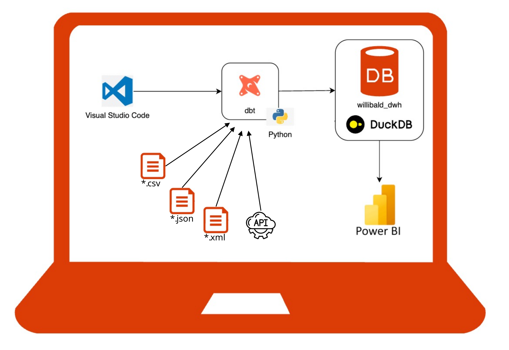
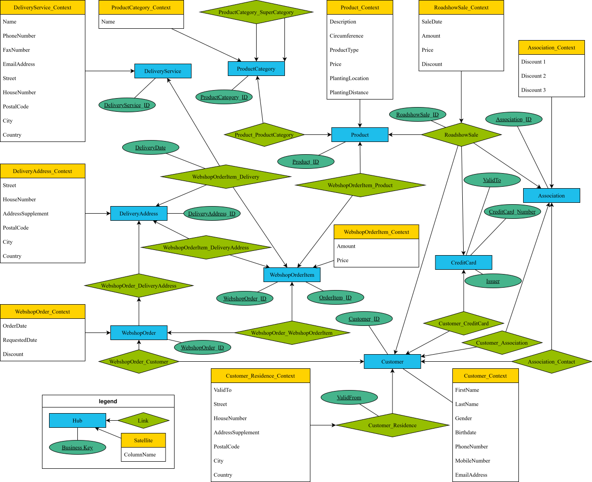

Übung Business Intelligence
Technische Grundlagen
Übungsübersicht
- Aufbau / Technologie der Übungsumgebung
- Beschreibung des Übungsdatenmodells (Quelle und Core-Warehouse)
- Ablauf der Übung
Übersicht über die Übungsumgebung

Übungsdatenmodell - Quellsystem


Übungsdatenmodell - Data Vault

Ablauf der Übung
| Übungsinhalt | Technologie |
|---|---|
| Analyse sowie Dokumentation des Übungs-DWH-Projektes und Präsentation der Erkenntnisse. | dbt |
| Modellieren und Beladen eines Sternschemas | dbt |
| Aufbau eines Dashboards zur Datenanalyse | PowerBI |
Einführung in dbt

Commit Ihrer Änderung erzeugen
Um Ihren Fortschritt zu sichern, übertragen Sie Ihr lokales Repository zu Github. Klicken Sie links im Menü auf "Source Control". Sie sehen eine Liste der Änderungen Ihres lokalen Repositorys.
git erfordert die Angabe einer E-Mailadresse und eines Benutzernamens, die dem Commit zugeordnet wird:
git config user.email "max.mustermann@stud.hs-hannover.de"
git config user.name "Max Mustermann"
Geben Sie im Message-Fenster eine kurze Änderungsbeschreibung ein. Zum Beispiel "Initializes dbt project". Klicken Sie dann auf "Commit".

Pushen Ihrer Änderungen zu Github
Der eben erzeugte Commit, muss noch an Github übertragen (gepusht) werden. Auch dies kann mithilfe von Visual Studio Code erledigt werden:

Da im Github-Repository noch kein Branch existiert, wird Visual Studio Code nachfragen, ob der lokale Branch zunächst veröffentlicht und dann gepusht werden soll. Bestätigen Sie dies.

Einstieg in Git
Um die Arbeit mit Git besser verstehen zu können, haben wir eine optionale Übung vorbereitet: zur Übung